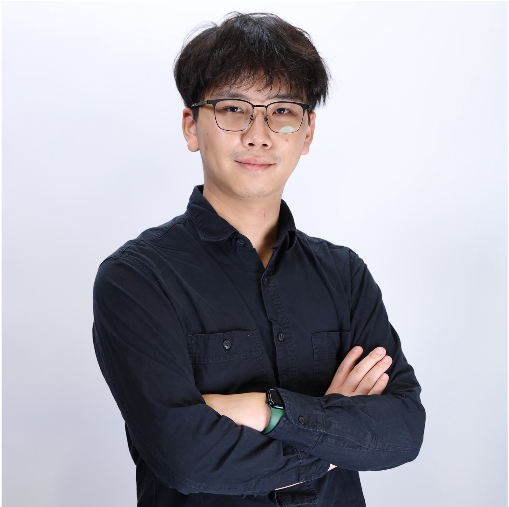
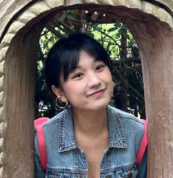
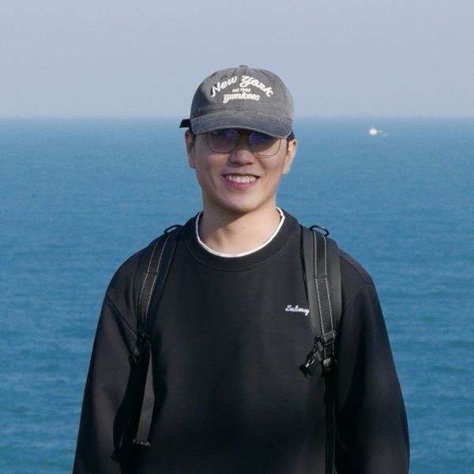

LumiGen is an agentic AI system that discovers the right analysis tool, configures it for your specific experiment, and ships a working, verifiable pipeline — automatically. Scientists shouldn't need ML expertise to use ML tools.
Modern AI lives in chat. Real bio-chem analysis lives in fragmented, custom tooling. Today, scientists bend their experiments to whatever tool they can configure. LumiGen flips that: an agentic system that adapts tools to the scientist's data, organism, and protocol — and stays reliable when they use it.
We're not another analysis tool. We're the adaptation layer that makes the powerful tools the field already trusts work on every lab's data.
An agent discovers, configures, validates against the scientist's own criteria, and ships a pipeline they can inspect, correct, and re-run.
The two halves — agentic algorithm discovery and microscopy automation — already exist as peer-reviewed work from our founding team. We're productizing research, not speculating.
Across bio-chem labs the same pattern repeats: roughly 60% of analysis time is lost to tool-wrangling instead of science. It breaks in three places.
Dozens of narrow options. Commercial alternatives cost $10K+ and run years behind the research frontier.
A brain-tissue model fails on cardiac organoids. Every lab needs custom ML — almost none have an ML researcher.
Hand-scoring frames. Tuning by trial and error. PhD time spent like RA time.
Customized tools that fit their science — and stay reliable when they use them.
A scientist + agent loop that discovers candidate tools, configures them, and validates against the scientist's own success criteria — until the goal is met.
A representative slice — a few raw images or frames — enough to ground the agent's plan in real data.
A few annotated examples or success criteria — what counts as a correctly segmented cell. The agent's "north star".
Discover candidate tools, configure, run on the sample, evaluate against criteria, refine — automatically, until it's right.
Review the result. Meets spec → the pipeline ships. If not, refine criteria and the loop returns to step 2.

Expertise in multi-agent research systems, computer vision, machine learning, and AI data-analysis pipelines for scientists.

Expertise in neuroscience, daily imaging/video analysis, and grounding product decisions in real scientific workflows.

Expertise in AI-microscopy, computational methods, and wet-lab biochemistry, with 2× Nature papers in the field.
Scientists shouldn't need ML expertise to use ML tools. We make every analysis tool work on every lab's data — then we make that knowledge open.